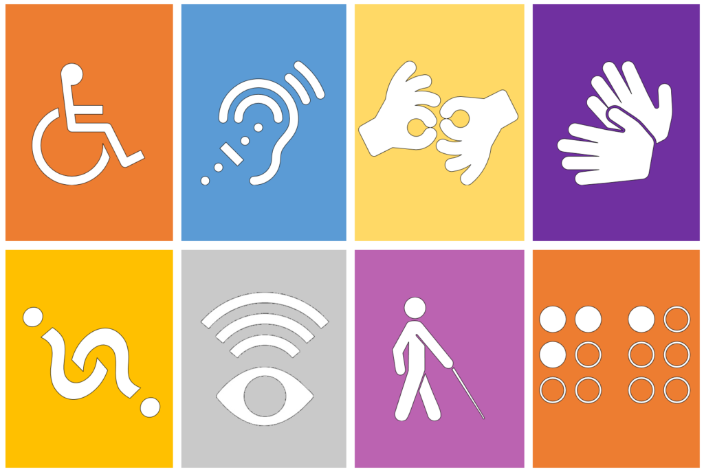

Förord
Allmänn tillgänglighet
Tillgänglighet handlar om hur samhället är utformat. Ett bra tillgängligt samhälle är utformat på ett sätt så att alla kan ta del av det utan onödiga svårigheter som tillexempel en person som inte kan gå ska kunna ta hissen eller någon som inte kan se ska kunna höra sig fram.